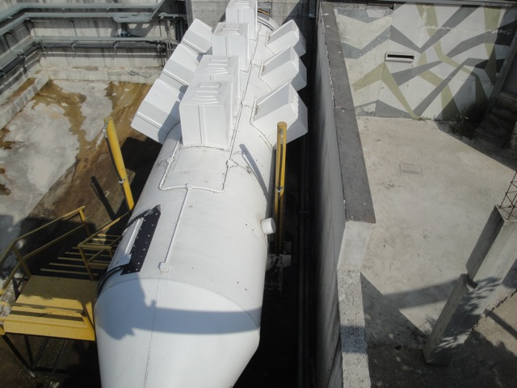

TPR's Mega Europe Trip
Rome Rome Credit Whoring Rainbow Magicland Fiabilandia
Mirabilandia
Movieland Studios
Gardaland
Walygator Park Holiday Park Europa Park Fort Fun Heide Park Schlossbeck Movie Park Germany Phantasialand
Parc Asterix Disneyland Paris
Good morning Gardaland Hotel. Hows it going. =)
Today we're going to be at Movieland Studios.
 Yeah. Here you can see all that this place and the water park have to offer.
Yeah. Here you can see all that this place and the water park have to offer.
 If you took Universal Studios Hollywood and Wild Rivers, joined them together, and then both of them said "F*CK SAFTEY AND F*CK COPYRIGHT LAWS!!!!!" Thats the closest I can come to describing Movieland Studios. AWESOME!!! LETS GO!!!!
If you took Universal Studios Hollywood and Wild Rivers, joined them together, and then both of them said "F*CK SAFTEY AND F*CK COPYRIGHT LAWS!!!!!" Thats the closest I can come to describing Movieland Studios. AWESOME!!! LETS GO!!!!
All right, first off, we started out the day with our very own exclusive ride on Magma.
This is pretty much a knock off of the Tram Ride @ Universal Studios Hollywood.
 Ooh!!! Fire!!!!!
Ooh!!! Fire!!!!!
Dude, this thing does so many insane things that the Tram Tour wouldn't even DREAM of doing.
 All right, now we get our own exclusive ride on Hollywood Tower.
All right, now we get our own exclusive ride on Hollywood Tower.
Gee, I wonder what ride they're hoping to imitate here? I've never seen font or signs like that anywhere before. =)
I really miss Freefall right now.
Intamin 1st Generation Freefalls are so rare and so hard to come by these days that getting on this was a real treat today.
I'm sure that they have all the rights to those characters right there.
 After all that, they also gave us an exclusive ride on their only credit, Bronto Jet.
After all that, they also gave us an exclusive ride on their only credit, Bronto Jet.
Much like Hollywood Tower, it was one of the last of its kind and very rare. So it was nice to get an exclusive ride on it.
 Hey, they're really fun. I definetly wish they were at more parks.
Hey, they're really fun. I definetly wish they were at more parks.
Love the setting of Movieland Studios right along Lake Garda.
They also gave us exclusive rides on their psuedo credit, Bronto Ring so the pathetic people who count powered coasters wouldn't have to emberass themselves.
After all that, they also gave us an exclusive ride on their only credit, Bronto Jet.
All right. After all our exclusive rides, we decided to hop onto U-571, or as most people called it, Drowning: The Ride.
BRING IT ON!!!!!
 Yeah. This ride is freaking insane.
Yeah. This ride is freaking insane.
All right. After all our exclusive rides, we decided to hop onto U-571, or as most people called it, Drowning: The Ride.
Awesome!!! Another year round horror house. It was mostly confusing as I kept getting lost in the dark.
"Nonsense. You'll all be fine. Just get in a conga line and follow me." *evil laugh*
All right. Lets all hop on Tomb Raider.
 Hmm. Just looks like an ordinary Top Spin.
Hmm. Just looks like an ordinary Top Spin.
Nope. Its actually a Vekoma Wacky Flip, which does way more crazy stuff than just a normal top spin.
All right. Time for lunch at the Rodeo Grill.
OH MY GOD!!!! UNLIMITED SODA, BEER, AND WINE!!!!! THANK YOU MOVIELAND STUDIOS!!!! THANK YOU SO MUCH!!!! One thing that I prefer about America over Europe would be the fact that America has unlimited refills wherever you go. So I was going through Europe mostly dehydrated due to constantly needing more liquids. You have no idea how much I appreciate this.
Yeah. This is a pretty good lunch.
And thank you for this free merchandise. I really like the Snowglobe you gave me. =)
"I'm just riding a Mechanical Bull while drinking a beer. Nothing can possibly go wrong here.
All right. Lets see how well I can do here.
Not bad. I'm hanging on for some time.
DAMMIT!!!! I'M DOWN!!!!
But hey. At least I got a good time.
Oh joy. They have the squat toilets here.
Now its time to check out their water park, Aqualand Studios.
These weird spermish water drops welcome you to Aqualand Studios.
Here you can see construction on their newest slide. Black Hole.
Looks like its going to be a fun ride.
This is probabably a good thing for us to know.
But enough touring around. Its time for us to look at the star attraction and my favorite water slide of all time. Twin Peaks.
 You first start out by going down this big steep drop.
You first start out by going down this big steep drop.
 Yeah. You gain a lot of speed right here.
Yeah. You gain a lot of speed right here.
 And then...AIRTIME!!!!!
And then...AIRTIME!!!!!
This moment right here is seriously insane.
Just take a look at how insane this slide is. =)
(Photo by Hanno Roos)
But Twin Peaks isn't the only crazy waterslide they have here. They also have the Water Jump.
Yeah. You really make a BIG splash on the Water Jump.
 It really reminded me of Bombay Blasters @ Wild Rivers, which as you know, was AWESOME!!!!
It really reminded me of Bombay Blasters @ Wild Rivers, which as you know, was AWESOME!!!!
 There's one last crazy slide for us to check out. Stuka's Boom. This looks like just an ordinary drop slide.
There's one last crazy slide for us to check out. Stuka's Boom. This looks like just an ordinary drop slide.
But nope. This one has a trap door, which makes it much more exciting.
Oh yeah. I left my shoes at Twin Peaks, but luckily, nobody stole them. So I'm lucky. Can't say the same for Will, who got his camera stolen by some asshole kids at Europa Park.
All right. Now we're gonna see the Rambo Show.
TPR Members!!! You're all under arrest!!!!
"Once again, we at Movieland Studios would like remind everyone to please keep sexual activities to yourselfs. Please wait till you get to your hotel rooms to butt-f*ck each other. Thank you."
 "This is all your fault. If it wasn't for your..." "Shut up before we get raped like the girl that was here earlier."
"This is all your fault. If it wasn't for your..." "Shut up before we get raped like the girl that was here earlier."
"Give me the idiots!!!!"
Yes. Having real explosions in the stunt show is a great idea. What could possibly go wrong!!? =)
Yes, the TPR Prisoners are behind that wall of water.
Yay!!! We didn't die!!!
Sorry about kidnapping you and arresting you. We hope this Frappachino makes up for all we put you through.
Thank you Rambo. Now we know that we are all destined to be famous Hollywood Actors someday.
Dude!!! Check out the Back to the Future Monorail!!!!
 "I'm not lying!!! It really is a Back to the Future Monorail!!!"
"I'm not lying!!! It really is a Back to the Future Monorail!!!"
OMG!!! We're going back in time!!! There's so many things I have to warn myself about!!!
 Bronto Jet from the monorail.
Bronto Jet from the monorail.

Anyone want to get wet?
Ooh. Something unsafe. Must take picture.
All right. Time to check out Terminator 3D while we're still here.
This is the guy who's gonna save us all. We're f*cked.
Hmm. Not a bad score.
Gardaland
Home